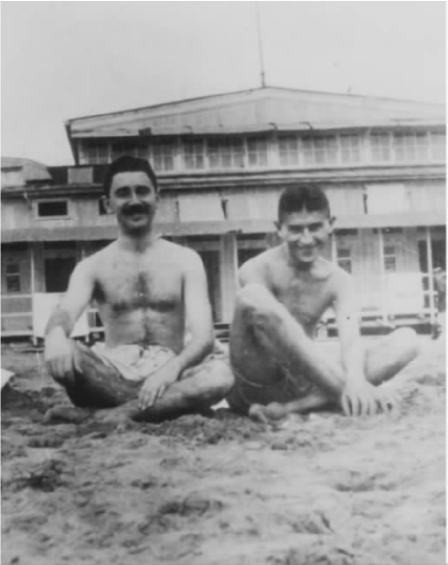

现时代的身体
“一天早上，当格列高尔·萨姆莎从惊梦中醒来时，发现自己在床上变成了一只硕大吓人的甲虫。”这一定是卡夫卡最有名的一句话了。但是，这句话和卡夫卡写的很多句子一样，里面充满了谜团。格列高尔的身体变形了，但是他的思维仍然是人的思维：这里的“自己”是否与他的身体（思维的反面）同义？其实格列高尔并没有“发现”自己变形了：实际上更应该说，尽管他看到了自己棕色的腹部和许多只脚，他还未能认识到这个难以理解的事实。“我怎么了？”这样寻思了一会儿之后，他的意识又回到了一个忙碌的旅行推销员：这样一个阴湿的早晨他也必须早起，去赶5点钟的火车。
卡夫卡将一个受困扰的雇员的思维安插到一只巨虫的身体里，从而戏剧性地表现出西方文化中的一个中心主题：精神和肉体的分离。灵魂和肉体的二元对立在基督教思想中存续已久，理性主义哲学传统（最有名的标志性人物是笛卡尔）以之为基础，将精神（理性的非实体存在场）和肉体（感觉、情感）的所在截然区分开来。肉体必须从属于精神，必须用思维训练来进行重新塑造，感情必须从属于理智。精神对肉体的权威通过衣服外化表现出来：硬板的衣领使维多利亚时代的男人必须直昂着头，妇女的身体则是用紧身胸衣束起来。然而，在19世纪末，肉体找到了其哲学代言人尼采。从19世纪90年代以来，全欧洲的年轻一代，包括卡夫卡在内，都热切地拜读他的作品。在他的预言式著作《查拉图斯特拉如是说》（1884）里，尼采宣称：被称为思维或者智力的能力，其实不过是居于身体内部的强大本能智力的一小部分（见方框内引文）。
那些蔑视肉体的人
尼采著，R.J.霍林代尔译：
《查拉图斯特拉如是说》（哈芒兹沃斯：企鹅出版社，1961）
在尼采的召唤下，许多现代文学都探讨了我们的肉体存在，其中最出色的是托马斯·曼的《魔山》（1924）。这是部讲述疾病的巨著，里面的汉斯·卡斯托普在瑞士的一家疗养院待了七年，这七年他钻研的诸多东西之一就是医学的奇迹。有次他得到允许，在X光下看自己手的样子。一看之后，他当即从自己的身体中脱离出来，将身体看成一个躯壳，其血肉已经销去。面对身体，他认命了，因为那一眼让他确信他终将死去，让他能够接受他必死的命运。
然而，卡夫卡与他人所共有的现代感性，不仅仅是接受肉体的死亡，而且要借此为肉体存在找到新的价值。许多卡夫卡的同时代人反对19世纪的一个倾向，即用一层层的衣服将身体裹藏起来，用紧身衣服扭曲身体的形状。他们提倡大方、坦然地接受裸体，把它当成真实、自然的东西。裸体的希腊雕塑没有必要限制于博物馆中，而应该成为现代人的实际理想，虽然现代人的身体不应该是大理石一般的白，而应该让日光晒成古铜色。裸体主义，尽管只是在有限的一些空间里才有可能存在，被他们说成是健康生活的最高形式。改革者们还推荐了一些实用而舒适的衣服让身体能够自由呼吸，还力劝人们逃离不健康的城市，住在那些特别设计的花园式郊区，例如德累斯顿附近的赫勒劳（卡夫卡的妹妹艾莉在那里，她曾打算送她的儿子去一所进步的学校）。对自然之物的崇拜，还催生了“候鸟”运动。在这个运动的影响下，成千上万的年轻人徒步穿行德国，睡在露天。卡夫卡本人则热爱划船、游泳和徒步旅行。他的朋友布罗德回忆道：
马克斯·布罗德：《争吵不休的生活》，
转引自马克·安德森：《卡夫卡的衣服》
（牛津：克拉伦登出版社，1992），第76页
卡夫卡每天赤身在敞开的窗户前健身两次。他还力劝未婚妻菲莉斯也锻炼，还让她学游泳。因为追求健康的生活，他也成了素食者（素食在当时看起来可远比现在怪异得多），甚至用了一种特别的咀嚼方法——以其倡导者美国人霍勒斯·弗莱彻的名字命名的“弗莱彻法”。1912年夏天，卡夫卡在德国哈尔茨山的天体营地荣邦待了两星期。在荣邦，裸体是肉体和精神“维新”活动的一部分，活动中会开展集体锻炼、素食和服装改良方面的讲座、户外基督教礼拜等。他们寻求肉体和灵魂间的平衡。因为其倡导的身体维新活动，荣邦营地成为20世纪20年代风行欧洲、如今业已成为现代文化核心的身体崇拜潮流的先声。目前有这样一个观点：在全北美和西欧，节食和日光浴的方式所体现的对身体的关注，已经取代了之前对灵魂的关注。体操或健身俱乐部里经常性的锻炼占据了教堂礼拜所空出来的仪式性空间。
不过，就卡夫卡而言，这种身体活动并不表示他平心静气地接受了自己的身体。它是强烈的矛盾思想的一面，另一面则从他的日记里突出表现出来。他在日记里不断地抱怨自己身体干瘦、健康不佳；他担心自己的身体太瘦长，导致脆弱的心脏不能把血液泵及周身。有几篇日记煞是吓人，记的是卡夫卡想象着自己的身体遭到可怕的惩罚。例如，1913年5月4日的日记里，他不由自主地想象着那种切肉条用的圆形刀片飞快地切进自己的身体。1920年9月写给密伦娜的一封信里，卡夫卡画了一幅插图，上面画的是一个男人的手脚被捆在两根移动的柱子上，随着柱子的移动，那个人被扯断撕裂了。对卡夫卡来说，肉体不仅能够借健康的生活来补救，它同时也是施行惩罚的最佳所在。

图8 卡夫卡与恩斯特·韦斯在玛丽里斯特海滩，丹麦，1914年。
格列高尔变成了一只甲虫。卡夫卡对自己的身体乃至一切身体的矛盾态度在这里表现得格外突出。格列高尔的形体变化了，他自己却未能注意到，这显示出他的意识与其身体相隔阂的程度。他有个具体的任务要完成——将自己庞大而笨重的昆虫的身体挪下床。他依然觉得他必须赶上火车，也能赶得上。他满脑子都是工作，这显示出工作需要所造成的自我疏离。他妈妈向格列高尔公司的科长保证：“那个家伙尽想着工作，别的什么都不想。”而科长正在全面地监视着他，全面的程度让人难以置信又让人不安，他来看格列高尔就是要搞清楚为什么他没到车站。就是在这种情况下，思维和肉体仍然通过无意识的语言联系起来，而无意识的语言又不自觉地显示出实际情况。躺在床上还没有起来时，格列高尔思摸着觉得他的一个同事简直“就是科长的奴仆，愚蠢，没有骨气”。“没有骨气”这个词显示出格列高尔下意识地明白自己没有脊椎。身体与无意识思维的交流，使格列高尔所具有的人的思维和动物的身体之间的对比不再那么强烈。
格列高尔费力下床时，卡夫卡用极尽细致而不带个人感情色彩的手法描叙其移动过程，不无讽刺地模仿出格列高尔如何集中精力对付眼下的任务，以压抑如此荒唐情形下的自我意识。但是，由于卡夫卡的文章总是带有进一步的暗示，格列高尔艰苦而又古怪滑稽的动作——紧贴着衣柜直起身子，接着靠在椅背上，把椅子推到门边——也许会让那些曾因意外而活动不便的人想起他们的经历：之前直接就可以完成的任务，现在却必须用新的方式调动身体来完成。格列高尔新的身体状况使他比以前要痛苦百倍。他不仅在掉下床时碰了头，而且在用下颌转动钥匙开门时受伤了，结果嘴里淌出一股棕色的液体。不论卡夫卡多么认可现代社会关于健康身体的理想观念，他还一再提醒我们：身体同时也是脆弱的和易受伤害的。
其他人物也有身体方面的描绘。我们首先碰到的是格列高尔的父亲、母亲和妹妹敲他卧室的三扇门催他起床。当格列高尔从房间里出现在他们面前时，他们的反应，还有那个科长的反应，都靠手势传达出来。科长用手捂住张大的嘴，“开始慢慢往后退，仿佛有个看不见的力量在将他不住地往后推”。格列高尔的母亲则当即晕了：
与此相似，卡夫卡频繁地借助手势和表情来描述人物，却往往不交待清楚这些手势和表情实际是什么意思。在他的小说里，人们的身体是不透明的，需要解释，可解释起来永远没有定论。卡夫卡读了狄更斯的作品，上面的“仿佛”程式很可能就是受狄更斯影响的结果。但是，在狄更斯的作品里，这个技巧原本是用于表现幽默和夸张的；在卡夫卡作品里，则成了表现不可思议的他人世界的一个基本手段。倘若说他人能被理解的话，我们就是在借助他们身体上的自我表达。
上文刚刚引用的一段描述格列高尔父亲的文字里，暴力只是有所暗示，到下文就实际出现了。格列高尔第二次出房间时，他发现父亲也“变形”了——倒不是从人变成昆虫，而是从衰老变得矫健、挺拔：浓密的眉毛，头发梳得一丝不苟，目光也很锐利。他一边走向格列高尔，一边高抬起脚，“靴底奇大无比”，让格列高尔大为吃惊。这里是在向读者暗示：他可能会像踩平常的虫子一样把格列高尔踩个稀巴烂。不过，他父亲没有用脚，而是从水果盘里抓苹果砸他，把他赶回房间里。其中一只苹果砸在他的背上，砸得他感到“格外地、难以相信地疼痛”。最终，格列高尔身上以苹果砸伤的地方为中心开始溃烂，导致他一命呜呼。
身体的性别特色
卡夫卡的作品里，身体潜在的施暴倾向常与性密切联系在一起。身为一个旅行推销员，格列高尔总是被催着赶着，他必须挣钱养父母和妹妹。他的性生活仅限于几次短暂的情遇，以及贴在他床对面的那幅画，上面画的是“一身毛皮装束的夫人，头戴毛皮帽子，身披毛皮围巾。她端坐在那里，目光落在隐住了整个前臂的厚毛皮手套上。”卡夫卡显然留意到当时的时装杂志，因为毛皮服装在1912年秋天，也就是卡夫卡写这篇小说的时候，一度特别流行。图画里性的色彩很重，文字描述里暗含着性行为的意思，这些让我们猜想格列高尔的“惊梦”是怎么回事，并间接表明他肚皮上“那一滩他无法解释的白色污点”可能是梦遗而来。
卡夫卡作品里的身体都有性别特色。这不仅指老生常谈意义上说的这些是男性身体，那些是女性身体，而且指一些文化行为与男性身体相联系，另一些则与女性身体相联系，因而成为男性特征或者女性特征的标记。卡夫卡作品里男性身体的特征是结实、挺拔、有军人气魄，一如老萨姆莎看似复元的时候，或者老本德曼跳起来逼着他退缩的儿子的时候。同样，约瑟夫·K.对着人群咆哮、《城堡》里的K.用拐杖打助手时的样子，都显示出男性的霸气。男性特征往往还有笔挺的制服做衬托，比如说老萨姆莎那“缝着镀金纽扣的蓝色紧身制服”、《流放地见闻》里军官穿的沉重的军人制服，或者《失踪的人》里倒霉的卡尔·罗斯曼当电梯工时套在身上的又硬又不舒服的制服。如果说制服使男性化的身体与自然相隔绝，女性化的身体则因其动物特征而有自然性质，例如画中穿戴毛皮的夫人，或者《审判》里辩护律师的女管家莱妮。莱妮的手指缝呈网状，这像是奇怪的返祖现象。K.这么形容她的手：“多么可爱的爪子啊！”作品中也可能纯粹用身躯庞大来定义具有女性特征的身体，例如《失踪的人》里的布律纳达身上一堆肥肉，没有人帮扶自己都走不下楼。对她的描述不免让人想起卡夫卡的一篇日记（1913年7月23日所记），日记内容显示出卡夫卡对女人的身体既着迷又厌恶，因为这些身体“爆发出性感”而又“天生地不干净”。
然而，卡夫卡小说里的一些身体则跨越了性别界限。有的女性角色男性化了，显得性欲强、有威胁性。如画上身着毛皮的夫人、《失踪的人》里健壮的克莱拉，再如格列高尔的妹妹——她愈来愈频繁地挥着拳头威胁他变成虫的哥哥。与之相反，有些男性角色则女性化了。格奥尔格在父亲面前只能唯唯诺诺。格列高尔直立的身形变成了水平状在地上爬行，就像《流放地见闻》里落水狗似的囚犯，四肢着地，像狗一样爬行，又像约瑟夫·K.，“像狗一样”躺下来等死。格列高尔不仅要平躺着，像他母亲晕倒时的样子，而且他还有个像孕妇那样隆起的硕大的腹部，这使他进一步显得女性化了。格列高尔羡慕他的同事们“生活得像大家闺秀”，这也间接表示他幻想做个女人。在后来的作品里，身体的消耗使主人公的男性特征更加迅速地消失殆尽。约瑟夫·K.设法查清楚他的案子，《城堡》里的K.努力想进城堡，最后都落得越来越疲惫不堪。约瑟夫·K.的疲乏从他的手势里表现出来：
耷拉着的脑袋表示屈服。约瑟夫·K.之前曾看到其他的诉讼当事人并排坐在那里，耷拉着脑袋、弓着背，这样就表示他们屈服了。类似地，K.好容易来到一个官员的房间，结果却不小心在床上睡着了，连官员跟他交待的信息都没有听见。
卡夫卡作品中女性化的男人在与父亲般人物的俄狄浦斯式的斗争中败下阵来。约瑟夫·K.追查案件时很轻易地就被引开了，于是计划着如何把他的情人抢走以向预审法官复仇，不过计划未能实现。K.羡慕城堡里官员们的性能力，他尤其羡慕克拉姆，因为据说村里所有女人都想和他性交。在《变形记》里，积极的性行为是父母的事，格列高尔则被排除在外。就在他父亲扔苹果砸他，他痛得失去意识之前仿佛看到一个性爱情景：
格列高尔的眼睛迷糊了，因此看不到他不该看的东西，即父母的性交。这次性交让格列高尔免于一死，因此无异于重演了当初赋予他生命的那次性交。不过，他自己的性欲后来再次萌生：听着妹妹拉小提琴的声音，幻想着邀她进了自己的房间，再也不让她出来，还吻她光着的颈子。由于无意识欲望的压迫，他的语言开始变得不合逻辑：
这一处，还有别的地方，肉体欲望都导致思维不连贯。这些实例说明：肉体所具有的“伟大理性”（尼采的话）可以动摇存在于脑子里的渺小无力的心智。
从某些方面来讲，格列高尔的变形解放了他。他不必再受那个艰苦工作的控制，不必受逻辑和理性的束缚。变形使他更趋于文明开化前期的自我满足状态。如果说启蒙时期把“高尚的野蛮人”想象成文明人类的理想反面，那么，20世纪里，在全球的开拓殖民阻碍了人们对原始人的种种想象之后，“高尚的野蛮人”形象已经被舍弃，代之以婴孩的形象——根据弗洛伊德的设想，它是一个完全受性欲支配的存在物，对它来说，所有的身体接触都是性快感的来源。格列高尔还没有达到这样的高度理想状态，但是当他困在自己房间时，确实也想出了点办法让自己开心。因为脚上有黏黏的护垫，于是他可以在房间的墙壁和天花板上爬来爬去，跌落到地板或者沙发上也不会受伤。相对地能不受重力作用的影响，卡夫卡的小说常抱有这样的幻想。例如《莫大的悲哀》中荡高秋千的杂技表演者，除非人在旅途，不然总是成天待在高高的秋千上；再比如那个想摆脱战时燃料短缺问题的叙述者 [1] ，他跨坐在煤桶上，上升到“冰山地区”，让自己永远消失；还有卡夫卡早期的一篇随笔《唯愿生为红皮肤印第安人》里的那个人，他梦想能自动而永不停歇地运动。
唯愿生为红皮肤印第安人
格列高尔体验的解脱还有一种，即他不用进食了，不过这很值得怀疑。他的家人一旦接受了他的变形，就开始考虑怎么给他喂食。有一段时间，格列高尔吃的尽是让人恶心厌恶的东西。那块奶酪，前一天他还是人的时候说都发霉了，现在却吃得津津有味。但是，没多久他就对任何食物都没有胃口了，像个苦行僧或者厌食者那样，什么都不吃。他的胃口变了，想要的都是人们不知道的或者搞不到的东西。这天他妹妹正在为三个房客拉小提琴，房客则在吃着丰盛的晚饭，有土豆和肉，于是勾起了他的食欲。“我好想吃东西！”格列高尔伤心地自言自语，“但不想吃他们吃的那些东西。怎么会这样？这些房客们吃得饱饱的，而我就这样空耗下去。”房客们对音乐了无兴致，可是对格列高尔，音乐却能给他一种不明所以的满足感：“他要真是个甲虫，音乐还能这么感动他吗？他觉得，面前的路正通向他所渴望的那种自己也说不明白的食粮。”这一切看起来矛盾得让人奇怪：音乐这个最没有实体的艺术（格列高尔变形前也不喜欢），现在却为他指明养料之源——或许是种同样没有实体的精神食粮，且正好与房客们狼吞虎咽的肉相对照？
绝食
绝食在卡夫卡的创作想象中尤为关键。作为抛却物质世界并可能进入精神世界的手段之一，它让卡夫卡产生了浓厚的兴趣，同时也引起了他的怀疑态度。卡夫卡的作品里，最突出的绝食者是绝食表演者 [2] ，他在集市上展示自己超人的忍饥挨饿的能力。如此令人毛骨悚然的表演却真的曾风行一时。1880年，美国人亨利·坦纳在纽约的克拉伦登会堂停食四十天，希望能对那些花二十美分去看他表演的观众有所教诲。表演成功了，他身上也没有留下明显的不良后果。最著名的绝食表演者是乔瓦尼·苏齐，他在欧洲各大城市几乎都表演过，表演的时候总有一群农民在旁边看守着以防他偷吃。维也纳作家彼得·艾腾贝格记述过一个女绝食表演者，她表演时待在一个玻璃箱子里，旁边时刻有人监视。如卡夫卡所说，对这种消瘦表演的兴趣确实淡多了，不过这个潮流现在似乎又有回归。就在我写这本书的时候，一位美国“魔术师”正把自己悬挂在伦敦塔桥上一个大玻璃箱里，决心当众停食四十四天。卡夫卡笔下的绝食表演者一心为了这门艺术，于是，当他的经理人为了迎合大众趣味做出妥协，把他停食的时间控制在四十天以内从不超过时，他感到十分沮丧。只有在大众对这样的功夫失去兴趣之后，他才能自己想停食多久就停多久，但是这样一来，他非凡的忍饥本事就不会被记载下来，也得不到承认。卧榻临终时，绝食表演者向旁观者坦言：他的停食不值得为人称羡，他也是万不得已罢了，
所以很明显，绝食不是什么职业，他仅仅是因为厌恶平常的生活而操起了绝食表演。又或者，那只是因为他过分脆弱的艺术良心迫使自己贬低自己？
停食使人们脱开了平常的、生命吞噬生命的野蛮世界。卡夫卡以黑豹的形象来形容这个世界。在吸引观众方面，绝食表演者远不及马戏团里的黑豹。观众蜂拥而至，以一睹其貌。黑豹的“血盆大口所洋溢出来的生命之乐”让他们慑服。这是尼采及其读者所理解的生命。尼采在《超越善恶之外》里写道：“活的东西，最希望的是迸发 其力量；生命本身就是强力意志。”在《道德系谱学》里，他又写道：“生命运作的基本方式 ——也就是说，从其基本功能上来讲——是通过伤损、暴力、剥削和破坏，而不可能是其他任何方式。”格列高尔的家人在其利益受到威胁的时候，也会施以暴力，采用强制手段。格列高尔一死，他的父亲马上就把房客们赶出自家公寓。就在房客们慢腾腾地下楼梯时，碰到一个肉店的伙计端着一盘子肉上来——从而与饿死的格列高尔恰好形成对照。看着绝食表演者防他偷吃的人也都是屠夫。格列高尔的家人为了庆祝他终于从他们面前消失，决定休假一天，去乡下散心。老萨姆莎夫妇深爱着女儿，两人决定该给她找个郎君了。两人的意图在一家人行程快结束时得到证明：当时他们坐在电车上，女儿突然站起来，舒展开她年轻的身体——提前让人看到黑豹一般优美的形体。黑豹有很强的掠食能力，所以它的形象比苦行僧般的、反生命之道的绝食表演者好多了。在尼采看来，只有那些吹毛求疵的现代悲观主义者才会觉得生命是“讨厌的”。
然而，卡夫卡站在了苦行僧般的绝食者一边，将绝食者的自甘饥饿与那些食肉者依然故我的食欲进行对照。《狗做的研究》的叙述者是一只狗，它把自己与其他狗区别开来，停止进食，希望能发现狗的食物从何而来。就在它戒食的时候，一只猎狗激怒了它，并把它赶走。以美国为背景的小说《失踪的人》里讲到一个很不友好的权威人物格林先生，他食欲高涨，一边饕餮大餐，一边责备年轻的主人公卡尔竟然不吃。后来有一会儿，格林先生庞大的躯体甚至引得卡尔心里嘀咕他是不是把另一个客人整个儿吃了下去。《绝食表演者》里有一段略有不同，里面介绍了一个真正的食人的人，他是绝食表演者的老朋友，前来看望他。这个吃人的朋友不止行为孟浪，而且他的头上堆满红发。因此他看起来颇与众不同：“这样子看起来一点也不怪诞可笑，但很是吓人，仿佛这一头非常人的头发显示了他非常人的食欲以及满足食欲的能力。”当生命力体现于这样的野蛮人身上时，苦行僧一般消磨生命的愿望就更容易理解了。
卡夫卡笔下的那些主人公——通常是繁忙的职业人士——身上被压抑的肉体需要和性欲以恐怖或者令人作呕的形式表现出来，格列高尔的昆虫外形只是其中最极端的例子。《乡村医生》里描绘的动物意象兼具恶心与暴力两方面的特征。医生受请去为人看病，但他的马之前死掉了，可病人住在十英里远的地方，他怎么赶到病人那里呢？一不留神之间，医生朝废弃的猪圈踢了一脚。猪圈门开了，眼前出现的竟是个马厩，两匹大马出现在面前，“架子高大，腰身健壮……漂亮的头部像骆驼一样低垂下来”。马夫在他眼里也半像动物半像人。马夫叫这两匹马“弟弟”和“妹妹”。他抱住医生的女佣，在她的脸颊上咬了一口，医生见此立即拿鞭子威胁马夫，叫他“畜生”。马夫冲破屋门追赶他的“猎物”，他的身上也体现了肉体生命，即强力意志或者欲望。另一方面，医生并不是禁欲者，而是欲望衰退了。他工作认真，一心扑在这个给他带来不了什么好处的工作上（他曾发牢骚说，他给那些忘恩负义的病人看病如何辛苦）。他的肉体欲望和性欲都被摒弃了，最终却以恶心、暴力的形式表现出来（“猪圈”[Schweinestall]有明显的“脏臭”[Schweinerei]的含义）。直到性欲旺盛的马夫出现之前，医生都很少注意他的女佣。起初他说到女佣时，他用的词是“它”（卡夫卡利用了“女佣”[Dienstmädchen]是个中性名词这一点）。直到马夫叫她“罗莎”，医生才开始叫她的名字。此后，他脑子里一遍又一遍想象着马夫如何和女佣交欢，细节想象得很生动，但愿自己能把“她从那个马夫的身子下面拽出来”。一旦他的性欲被激起，就再难消除了，这不免让他大为痛苦。
一如上面故事中写到的，肉体需要有时候会以野蛮而吓人的方式侵入刻板重复、无法让人满意的日常生活。肉体需要还会表现为创伤——这是卡夫卡的想象里总会出现的一个意象。格列高尔被他父亲打伤，几乎送了命。小说告诉我们：“那个苹果还嵌在格列高尔的肉里面，成了个明显的提示。”提示什么呢？考虑到故事的基督教背景（老萨姆莎夫妇在听到格列高尔的死讯时在面前划十字），这让我们联想到折磨圣徒保罗的“肉中刺”（《哥林多后书》第12章第7节），而“肉中刺”经常被人解读为反复提示性欲的东西。在先前的故事《判决》里，格奥尔格父亲的大腿上（阴部）有个打仗时留下的伤疤。《致科学院的报告》里自称已经变成人的猿猴被猎人打伤，原来猎人在非洲捕捉他时开枪打中了他臀部以下的部位，结果他现在走起路来还是一瘸一拐的。但是最为奇异的伤，是召来乡村医生的小伙子身上的伤。起先，医生觉得小伙子身上似乎没有一点问题。他正要嘲笑小伙子装病逃避工作，忽然听到马的嘶鸣声，这使他仔细检查起来，终于看出了点东西——只要确实存在，他就绝对不能错过的东西：
这一段的含义很多，也让人不安，评论几乎都没有点到。伤口位于“臀部上”，从而和卡夫卡笔下的其他伤口一样，都和性联系起来，就如同它与女佣罗莎也有联系。描述伤口的红色深浅时手法如此细致，似乎它是个审美对象，结果与其明显的性的特征形成对照。身体上这个大得难以想象的、阴道般的裂口体现出男人对女性生殖器所产生的恐怖联想。犹如矿井里的坑道，它仿佛展开了大地母亲的身体，里面的血暗示落红或者月经（小伙子的姐姐手里挥动着的“被血浸透的手帕”也帮我们做如此理解）。小伙子似乎被阉割而女性化了，也许变成了个雌雄同体的人，或者说不能再对他做性别区分了。
不过伤口也包含着生命。有许多只脚的虫子（自然史尚未认识的）在里面蠕动，仿佛小伙子的身体已经在腐烂。伤口与玫瑰联系在一起，它被比喻成一朵花。小伙子的身体在死亡和腐烂之时，也绽放出新的生命——一个以肉体死亡为条件的新生命。这难道是在提醒我们：我们也是有机体，当我们重新化入物质宇宙时，将滋养未来的有机体生长？或者它指出了某个迥异于物质存在的现实？
卡夫卡经常显示出拒绝肉体存在的倾向，尤其是当肉体存在涉及性的时候。故事《塞壬的沉默》（1917）将神话故事加以改写。在这个故事中，真正危险的不是塞壬们的歌声，而是她们的沉默。可是奥德修斯不了解这个情况，他用蜡封住耳朵，把自己绑在桅杆上。尽管塞壬们没有出声，奥德修斯还是观察到“她们在喘气，脖子扭动着，眼睛里满含着泪，嘴巴半张开”。但是，他把这一切理解成唱歌的伴随状态，而不是性欲的极度呈现。因此，仅仅因为误解，奥德修斯安然躲过了物质世界的性诱惑。就在一两天前，在同一个笔记本里，卡夫卡以《一个生命》为题目，对物质世界做了甚为极端的描画：
正如小伙子的伤口犹如被虫子噬咬的花朵，这段话里，生长和衰朽也形影不离。文中的母狗体现了女性特征，它拖着一群崽子，它和叙述者的童年联系在一起，还有叙述者难以抗拒的盛情，虽然它试图把叙述者拽进来，和它自己一样衰朽下去。于是，因为那残存的感情，因为曾经的喜爱，叙述者和母狗紧密相联，也和世界紧密相联。最终看来，是爱把我们变成了声色世界的奴隶。就像卡夫卡紧接着在格言里写的：“性爱欺骗人们，让人们忽略了圣洁的爱；性爱本身不能欺骗，但是它之所以能，是因为它无意识地包含了圣洁的爱的元素。”性爱是圣洁的爱的翻版，它包含了足够多的纯正的爱，从而可以有效地让人们心神涣散，不去寻求圣洁的爱。
读读卡夫卡后来的故事和格言，人们有时候会感到自己被莫名其妙地拉回到古代的基督教神秘主义者、犹太神秘主义者与殉道者的世界。《一个生命》排斥肉体，这也许可以让我们想起当初诺斯替派教徒所持有的观念：肉体属于可憎的、可鄙的感官世界，而感官世界是恶魔造出来的，目的是让人类疏远善神所掌管的遥远得难以想象的纯洁王国。《城堡》中有一个奇特的片段就让人们不禁要这样来理解。K.在大雪中等候着城堡官员克拉姆来酒馆，克拉姆的雪橇夫叫K.从雪橇上取瓶白兰地喝。K.想白兰地肯定是香气飘飘，可一尝之下味道并不如此：
埃里奇·海勒——早期解读卡夫卡作品的人当中引起争论最多的几个人之一——发现这段文字表现出诺斯替派的观念，即现象在最缥缈、最接近精神层面的时候是最美的，但是一旦以物质的形式体现出来，或者像上文里出现的在直接与身体接触的情况下，就变得稀松平常、粗劣不堪。
然而到后期，卡夫卡对身体所抱的态度变了，而且更复杂了。有条格言如此写道：“殉道者不排斥身体，他们在十字架上让身体升华。在这方面，殉道者和反对他们的人是一致的。”也就是说，殉道者钉在十字架上的残缺之体并非该抛弃的皮囊，而是精神胜利之不可或缺的标志。类似地，绝食表演者也不排斥身体。他并不试图消尽肉身，做个纯精神的存在者。相反，他的身体是其艺术的工具。他的忍耐力就记载于他日渐消瘦的过程中。没有身体，他就无以为继了。同样，彼得·布朗也证明了一个观点：古时候退隐到埃及大沙漠里的隐士们，他们不是要损害或者惩罚自己的肉体，而是要借困苦来改造身体，让身体臻于完善，成为复活的基督那样的精神体：
彼得·布朗：《身体与社会：
基督教发展早期的男人、女人与戒止性事》
（纽约：哥伦比亚大学出版社，1988），第233页
绝食表演者为了艺术而吃的苦远甚于福楼拜或其他卡夫卡欣赏的专一的艺术家。长时间颗粒不进，他对艺术的奉献从他的身体上显而易见，现在的身体比书本上的描述更接近他的自我。他的经理给他设定的四十天期限妨碍了他追求艺术的完美。当没有人注意他时，他可以在某个角落里无限期饿下去，可是没有人来欣赏他的艺术成就。
所有这些例子中，我们论及的都是个体的身体。但是，身体通常也可以用来指大的人类群体：公民团体、作为人民团体的国家等。身体意象的这一用法卡夫卡也运用过，尤其是在他后期的故事里面，而后期故事关注的焦点也逐渐从孤立的个体转为群体。《狗做的研究》里，那些狗“生活在一个群体中”，有着强烈的群体感。它们最大的快乐在于“温暖地聚在一起”，它们总是搞不懂为什么各自住得那么远，为什么要遵守一些不是它们自己制定的规则。故事里的那些狗不注意人类的存在。它们不知道自己的食物是它们的主人扔给它们的，还以为是靠它们自己在地上撒尿得来的。它们可以接受食物来自上面而不是下面这个看似矛盾的说法。唯独故事的叙述者例外，因为它有科学头脑，于是它忍饥不食以求解开谜团。但是，由于它的认知能力天生有限，因而始终无法发现是人类在养它们。故事含蓄地指出，它如果只是过着平常的、不去反思的、像其他狗一样的生活，会自在得多。卡夫卡的最后一个故事《女歌手约瑟芬妮，或耗子民族》里，那只会唱歌的耗子的才能令人生疑。她好像和其他耗子没什么两样，就是吱吱叫。但是人们纷纷赶来听她唱歌，他们拥在一起，“身体挤着身体，暖乎乎的”。他们照顾着她，仿佛将自己和她联系起来时，他们就成为一体了，“颇像父亲照料一个小孩一样”。她的歌声让听众感受到自己形同和别人全部合为一体：
全民族合为一体，而且连约瑟芬妮这样自私的个体也能容纳进去。故事的叙述者总结道：她错误地渴望着那个特殊的地位，她的死将让她从该特殊地位上解脱出来：